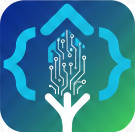

As a client, I decided what to use in my website by consulting with AI and collaborating with it to create an interesting logo and color palette. I have been communicating with my lead developer through email which as been mostly successful so far. They have mostly met my expectations for the site, but they also haven't completed the CSS yet and I'm not sure if they will. Next time, I will be more specific on where the colors go and including more images for them to use.
Here's the link! Link to the md fileI mainly managed my team via email and attempting to communicate in the md files located in the project files, although I did not use them as much. I mainly communicated with the client, Aaron, in class since it was the best time to talk with him. Aaron had a link to the website, so that was how I showed him the changes being made. I have not been able to have almost any contac tat all with my junior developers, even though I attempted many times throughout the time we worked on this project. Therefore, the two subpages are incomplete mostly. Github made managing the site fairly easy.
Here's the link! Link to Lead Dev md file Link to Assignments md file Link to the communication md file Link to the Roles md fileAs a junior developer, we communicated with the team lead for Ben Wayland's project using Discord, which was probably the most effective way to communicate that I have had out of any of them. However, it was super hard to communicate with the lead dev for Royal's project, mostly because it was already done. I was able to contribute a lot to Ben Wayland's site, but I did not contribute at all to Royal's project because it has seemingly been done from the beginning.
This is the link to Ben's website Link to the Junior A md file This is the link to Royal's WebsiteProbably the most challenging part of this assignment was working with the people on the teams I'm on. For some of the teams wit hwas fairly easy but for others it was very difficult. The actual coding part was a lot easier than I thought it would be, and it was actually somewhat enjoyable. I also appreciated trying to work with hard colors that were given to me. If I could do this differently, I would find a better way to work with the other devs on the team. I do feel more confident working on real projects, however it's a bit harder to do jobs that I don't understand yet.
Also, Royal's website doesn't have any md files.
Here's the link to the Github portal page files with all my wdd130 files inside of it.